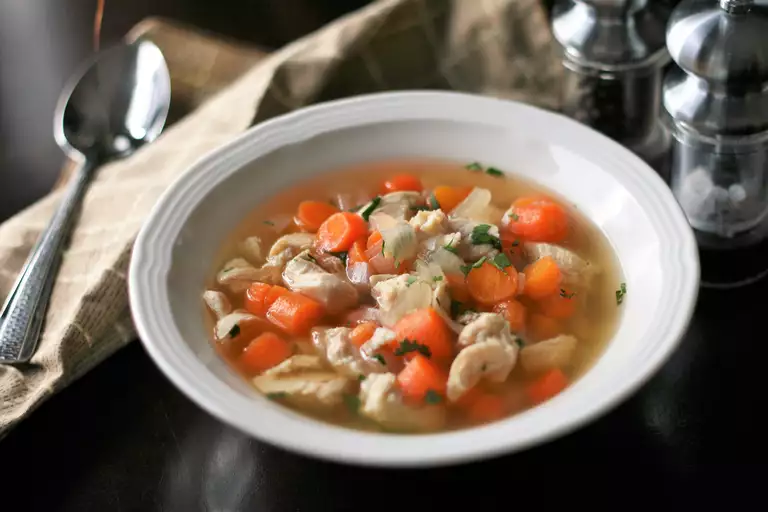

Main Menu
Chicken Soup

This chicken soup with chicken breast is a quick and easy recipe, yet it makes a tasty, mostly homemade soup.
Ingredients for 1 Person
- 2 (14.5 ounce) cans chicken broth
- 2 cups baby carrots
- 1 onion, chopped
- 1 clove garlic, minced
- ⅛ teaspoon celery sal
- 2 skinless, boneless chicken breast halves
Preparation
- Bring broth to a boil in a medium saucepan over medium-high heat. Add carrots, onion, garlic, and celery salt.
- Reduce heat to low and add chicken. Cover and simmer until chicken is longer pink in the center and the juices run clear, about 20 minutes. An instant-read thermometer inserted into the center should read at least 165 degrees F (74 degrees C).
- Remove chicken to a cutting board, cut into bite-sized chunks, and return to the saucepan. Stir in cilantro.
Main Menu